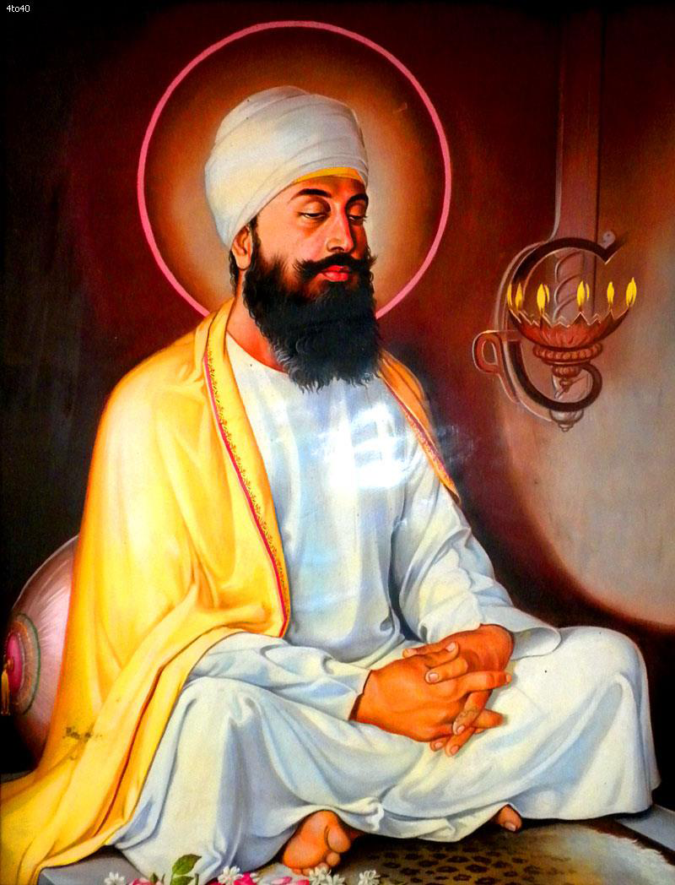

<center><body background="images1/khlihoij.png"width="1000"><TABLE width="1000" BORDER="0" cellpadding="0" cellspacing="0">
<tr><td colspan="2"><center></center>

<tr>
<td>
&nbsp;&nbsp;&nbsp;&nbsp;&nbsp;&nbsp;
<a href="images1/teg.png" width="1000"> <center> </center>
</td>
<td>
<FONT COLOR="#741111"><FONT SIZE="5">
The Ninth Guru - Guru Tegh Bahadur (1664 - 1675)
</font>
<br>
<FONT COLOR="#741111"><FONT SIZE="4">
Name : Guru Tegh Bahadur ji<br>
Parents : Guru Har Gobind & Mata Nanaki<br>
Born : April 1, 1621, Amritsar<br>
Siblings : Brother - Baba Gurditta, Baba Suraj Mal, Baba Ani Rai, Baba Atal Rai<br>
Spouse : Mata GujriChildren : Guru Gobind Singh<br>
Guruship : 1661- 1664<br>
Joti Jot : Wednesday, November 24, 1675 at Chandani Chownk New Delhi<br>
Age :54 years<br>
Bani : --N-A--
<br>
</td>
</tr>

<tr><td colspan="2">&nbsp;&nbsp;&nbsp;&nbsp;&nbsp;&nbsp;

<FONT COLOR="#741111"><FONT SIZE="4">
<br>
Guru Tegh Bahadur Sahib was born on Vaisakh Vadi 5, (5 Vaisakh), Bikrami Samvat 1678, (1st April, 1621) in the holy city of Amritsar in a house known as Guru ke Mahal. He had four brothers Baba Gurditta Ji, Baba Suraj Mal Ji, Baba Ani Rai Ji, Baba Atal Rai Ji and one sister Bibi Veero Ji. He was the fifth and the youngest son of Guru Hargobind Sahib and Mata Nanki Ji. His childhood name was Tyag Mal. The Sikhs began to call him Teg Bahadur after the battle of Kartarpur against Painda Khan in which he proved to be great sword-player or gladiator. But he preffered to call himself 'Degh Bahadur' 

From the very childhood Guru Teg Bahadur Sahib used to sit inside the house and spend most of his time in meditation. He seldom played with other boys of his age. Due to the rich religious atmosphere at home he developed a distinct philosophical bent of mind. Naturally he developed inspirations towards a life of selfless service and sacrifice. 

Guru Tegh Bahadur Sahib had a regular schooling from the age of six. Where he also learnt classical, vocal and instrumental music. Bhai Gurdas Ji also taught him Gurbani and Hindu Mythology. Apart from the schooling he was also given the military training like horsemanship, swordsmanship, javelin throwing and shooting. He had witnessed and even participated in the battles of Amritsar and Kartarpur. But inspite of all this, he developed an extra ordinary mystic nature in due course of time. 

Guru Tegh Bahadur Sahib was married to Gujri Ji (Mata), daughter of Sh.Lal Chand & Bishan Kaur of Kartarpur at an early age on 15 Assu, Samvat 1689 (September 14, 1632). A son (Guru) Gobind Singh (Sahib) was born on Poh Sudi Saptmi Samvat 1723 (December 22,1666). Gujri (Mata) was also a religious lady. She was disciplined in behaviour and modest in temprament. Her father was a noble and rich man. 

Soon after the death of Guru Hargobind Sahib, Mata Nanki Ji, the mother of Guru Tegh Bahadur Sahib took him and his wife (Gujri) to her natal village (Baba) Bakala near the river Beas. Some Chronicles state that Bhai Mehra, who was a devout Sikh of Guru Hargobind Sahib, got constructed a house for (Guru) Tegh Bahadur Sahib where he lived in complete peace and led a normal life for the next twenty years (from 1644 to 1666). 

It is a totally wrong conception (as some historian point out) that Guru Sahib got constructed a solitary cell in his house where he often used to meditate God. Actually, it is seen that the meditation for self-purification and self-attainment of Guru Tegh Bahadur Sahib is wrongly mis-understood. Guru Nanak's spiritual traditions hold that after attaining the divine light, one has to lift others from darkness to liberate the world. In JapJi sahib, Guru Nanak Sahib says: " There can be no love of God without active service." Guru Tegh Bahadur Sahib's long spell of silent meditation perfected his will. Through meditation Guru Tegh Bahadur Sahib archived the torch of Guru Nanak creative vision. He developed aspirations towards a life of selfless service and sacrifice, with a moral and spiritual courage to abide by the will of God. When Guru Hargobind Sahib invested Har Rai Sahib with Guruship, Guru Tegh Bahadur Sahib was the first to bow to Guru Har Rai Sahib. He never contested the will of his father (Guru). 

During the stay at Baba Bakala, Guru Tegh Bahadur paid visits to many holy and historical places like Goindwal, Kiratpur Sahib, Haridwar, Prayag, Mathura, Agra, Kashi (Banaras) and Gaya. A devoted Sikh of Guru Hargobind Sahib, Bhai Jetha Ji took Guru Tegh Bahadur Sahib to Patna. Here he heard the news of the passing away of Guru Har Rai Sahib (6th Oct, 1661) and decided to return to Kiratpur Sahib. On the way back he reached Delhi on March, 21,1664, where he learnt the arrival of Guru Harkrishan Sahib at the residence of Raja Jai Singh. He alongwith his mother and other Sikhs paid visit to Guru Harkrishan Sahib and after expressing profound sense of sorrow and sympathy towards Guru Sahib and his mother Mata Krishan Kaur Ji, he left for Baba Bakala (Punjab). 

After some days, Guru Harkrishan Sahib (on the eve of his death), prophetically uttered only two words "Baba Bakala" meaning that his successor would be found at (Baba) Bakala. Now with this announcement near about twenty-two posers and self-appointed successors sprung up in the small village Bakala. The most prominent among them was Dhir Mal who was the only direct descendant of the eldest son Baba Gurditta Ji and it was he who possessed the first copy of Guru Granth Sahib prepared by Guru Arjan Sahib. 

This situation puzzled the innocent Sikh devotees for a few months. Then in the month of August 1664, Sikh Sangat headed by some prominent Sikhs from Delhi, arrived at village Bakala and acknowledged Baba Tegh Bahadur Ji as the Ninth Nanak, but the atmosphere remained same at Village Baba Bakala. Guru Tegh Bahadur accepted the spiritual succession but never liked to be dragged into the mire of competition with the imposters. He kept aloof from them. An incident, which changed the whole scene deciding the dispute forever, occurred one day. 

Makhan Shah Lubana, a rich trader and a devout Sikh from Tanda district Jehlam (now in Pakistan), came to pay his obeisance and 500 gold coins as offerings to the Guru Sahib, at village Bakala. It is said that earlier his ship full of merchandise was caught in a storm. But due to his prayer to the Guru Sahib, his ship was saved. He made up his mind to offer 500 gold coins in lieu of the safety. Reaching village Bakala he had to encounter so many 'Gurus'. Everyone contested to be the real 'Guru'. He offered everyone only two coins and non-of them challenged. The imposters were glad to accept only two coins. But he was disappointed as he sensed something wrong. 

One day he learned from some villagers that there was also another Guru named Tegh Bahadur Ji. He went to see the Guru who was meditating in a lone house. When he offered two coins to Guru Tegh Bahadur Sahib, the later questioned that why Makhan Shah was breaking his own promise offering only two coins instead of five hundred. At this Makhan Shah could not contain himself with joy. He immediately climbed to the roof of the same house and cried loudly that he had discoverd the true Guru (Guru Ladho Re...Guru Ladho Re...). On hearing this a large number of Sikh devotees assembled there and paid their homage to the true Guru. 

This incident ravaged Dhir Mal and he with the hired ruffians, attacked Guru Tegh Bahadur Sahib. A bullet hit Guru Sahib and when the Sikhs learnt about this attack, they retaliated and took possession of (Guru) Granth Sahib lying with Dhir Mal. But Guru Sahib returned it to Dhir Mal while forgiving him. 

Guru Tegh Bahadur Sahib with his entire family reached Amritsar (about November, 1664) to pay obeisance at Harmandir Sahib, but the ministers of the holy place shut its doors against him and he was not allowed to enter. Guru Tegh Bahadur Sahib did not pressed or forced his entry but returned calmly and reached Kiratpur Sahib via Vallah, Khandur Sahib, Goindwal Sahib, Tarn Taran Sahib, Khem karan. Before reaching Kiratpur, he also visited Talwandi Saboke, Banger and Dhandaur. It is to be noted that wherever Guru Sahib went, there he established new Manjis (preaching centres of Sikhism). Guru Tegh Bahadur Sahib reached Kiratpur Sahib in May 1665. 

In June 1665 Guru Tegh Bahadur Sahib bought some land from Raja of Bilaspur near Makhowal village on the bank of River Satlej and founded a new town Chak-Nanki after revered name of his mother Nanki. Later this town was renamed as Sri Anandpur Sahib. 

After a brief stay at new founded town, Guru Tegh Bahadur Sahib set out for a long journey towards the east in order to strengthen the Sikh nation by setting up new preaching centers and renewing the old ones. It was his second missionary tour. He left Anandpur Sahib in August, 1665 alongwith many staunch sikhs such as Bhai Mati Das Ji, Bhai Sati Das Ji, Bhai Sangtia Ji, Bhai Dayal Das Ji and Bhai Jetha Ji apart from his close family members. It was like a long-march for the sake of suffering humanity. This mission raved the othodox regime of the Mughals, because large crowds began to attend the gatherings and sought the Guru's blessings. When Guru Tegh Bahadur Sahib was coming at Dhamdhan in the Banger area in December 1665 a Mughal enforcement officer Alam Khan Rohella arrested him alongwith Bhai Sati Das Ji, Bhai Moti Das Ji, Bhai Dayal Das Ji and some other Sikh followers under the imperial orders from Delhi. All these were produced before the court of the empror Aurangzeb, who orderd to hand-over them to Kanwar Ram Singh Kachhwaha, son of Raja Jai Singh Mirza. The entire family of Raja Jai Singh was a staunch follower of Guru Sahib and hence they treated him not like prisoner but endorsed great respect and also secured the releasing orders from the imperial court. Guru Sahib was released after about two months. Resuming his mission further, Guru Sahib reached Mathura and then Agra and from here he reached Allahabad via Etawah, Kanpur and Fatehpur. He also visited Benaras and Sasaram and then reached Patna in the month of May 1666. 

Guru Tegh Bahadur Sahib proceeded further towards Dacca via Mongair, Calicut (now Kolkata), Sahibganj and Kant Nagar in October 1666. But before leaving for these places he made necessary arrangements under the supervision of a devout Sikh lady known as Mata Paidi for the safe stay of his family members at Patna during the rainy season. Then Mata Gujri Ji was expecting a child. At all the places Guru Sahib halted, Satsangat and Kirtan (recitations of Verses from Guru Granth Sahib) were held daily and religious sermons were delivered. Many prominent Sikhs like Bhai Mati Dass Ji, Bhai Sati Dass Ji, Bhai Dayal Das Ji and Baba Gurditta Ji, supported Guru Sahib in religious sittings during these tours. 

At Dacca Guru Sahib established a big Sangat (Hazuri Sangat) with the help of ardent followers like Almast Ji and Natha Sahib. A Gurdwara Sangat Tola now marks the place where Guru Sahib used to deliver holy sermons to the audience. It was here that Guru Sahib heard the news of the birth of his son, (Guru Gobind Singh Sahib) who was born on Poh Sudi Saptami (23 Poh) Bikrami Samvat 1723, (December, 22,1666) at Patna.From Dacca, Guru Sahib proceeded towards Jatia Hills and Sylhet where he established a preaching Centre for Sikh Sangat and reached Chittagong via Agartala. 

Guru Sahib returned Dacca in 1668. At this time Raja Ram Singh son of Late Raja Jai Singh who was already present at Dacca in order to make arrangements for his expedition to Assam, met Guru Sahib and sought blessings. (Some Chronicles state that Raja Ram Singh met Guru Sahib at Gaya). As Guru Sahib was already touring the Far East places, Raja Ram Singh requested Guru Sahib to accompany him during the expedition. Guru Sahib did so. During this tour Guru Sahib meditated on the banks of river Brahmaputra at Dhubri in Assam where stands a Gurdwara known as Sri Damdama Sahib. Earlier Guru Nanak Sahib also sanctified this place. It is said that by the grace of Guru Tegh Bahadur Sahib, there was a peaceful settlement instead of bloody conformation between the ruler of Kamrup and Raja Ram Singh. Guru Sahib left Assam in April-May, 1670 and returned Patna. 

A reign of terror was let loose on the Hindus in India by the Muslim theistic state. The prosecution of Hindus was the most outrageous feature of his reign. Augranzeb made up his mind to rout out Hinduism from India by hook or crook, and introduced many Islamic fundamentalist programs like special taxes for the Hindu traders, religious tax (Zazia) for non-Muslims. Celebration of Diwali and Holi was forbidden. He demolished many important and sacred Hindu Temples, and erected mosques in place of them. Chronicles state that some Sikh Gurudwaras were also demolished. 

Guru Tegh Bahadur Sahib heard of these black deeds of Aurangzeb and moved towards Punjab. In the way, Guru Sahib was arrested at Agra along with many of his prominent Sikhs in June 1670. They were produced before an imperial court at Delhi but released shortly. Guru Sahib returned Anandpur Sahib in February 1671. He spent about two years there peacefully preaching Sikhism. Here he identified himself with the sorrows and sufferings of the common masses. 

In 1672, Guru Sahib set out for another religious journey towards Malwa region in Punjab. Socially and economically this area was backward and almost neglected, but the people were hard working and poor. They were also deprived of basic amenities like fresh drinking water, milk and even simple food. Guru Sahib toured this area about one and half year. 

He helped villagers in many ways. Guru Sahib and Sikh Sangat assisted them in planting trees on barren stretches of land. They were also advised to start dairy farming and in this respect many cattle heads were also distributed free of cost among the poor and landless farmers. To cope with the scarcity of water many community wells were dug on the behest of Guru Sahib by performing Kar-Sewa (free service). Thus Guru Sahib identified himself with the common masses. At this stage many followers of Sakhi Sarver (a muslim outfit) entered into the fold of Sikhism. On the other hand Guru Sahib established many new preaching centres of Sikhism at these places. The main and important halts of Guru Sahib were Patiala (Dukhniwaran Sahib), Samaon, Bhiki, Tahla Sahib, and Talwandi in Bhatinda, Gobindpura, Makrora, Bangar and Dhamdhan. Guru Sahib toured these areas about one and a half years and returned Anandpur Sahib in 1675. 

These preaching tours and social works irked the Muslim fundamentalists and created a fear-psyche among the upper privileged classes. On the other hand the secret news-writers of the Mughal Empire dispatched exaggerated and subjective reports regarding the religious activities of Guru Tegh Bahadur Sahib. 

As it is mentioned earlier that the Muslim theistic state executed forceful conversions in order to make India, Dar-ul-Islam and to achieve this goal as soon as possible, the Hindu Pandits and Brahmins (the preaching class) of Kashi, Prayag, Kurukshetra, Haridwar and Kashmir were identified for this purpose. All types of atrocities were let loose on them. They were given an ultimatum either to embrace Islam or to be prepared for death. It is regretted that all this was done under the very nose of many so-called brave Hindu and Rajput kings and chiefs who were also subordinate to the imperial state of Delhi. They were only silent spectators aiming at their own ends. They even did not raise a minor voice of protest against the nefarious acts of Aurangzeb. There was a wave of mass conversion in India and Sher Afgan Khan an imperial viceroy first tried this practice in Kashmir. Thousands of Kahmiri Pandits were massacred and their property was looted. 

At this juncture, the Brahmins especially the Kashmiri Pandits led by Pandit Kirpa Ram Dutt approached Guru Tegh Bahadur Sahib at Anandpur Sahib in May 1675. They told their tales of woe to Guru Sahib and requested to protect their honor and faith. Guru Sahib heard their views and agreed to resist the nefarious act of forcible conversions by peaceful means. After long discussions with the prominent Sikhs and Kashmiri Pandits, Guru Sahib made up his mind to sacrifice himself for the cause of "Righteousness" and for the freedom of "Dharma"(Religion) 

On the advice of Guru Sahib, the Kashmiri Pandits presented a petition to the Emperor and in lieu of this an imperial court of Delhi, issued summons asking Guru Tegh Bahadur Sahib to appear in the said court. But on the other hand, before the imperial summons reach Anandpur Sahib, Guru Sahib started his journey towards Delhi after installing his son (Guru) Gobind Sahib as the Tenth Nanak in July 1675. Bhai Dayal Das Ji, Bhai Moti Das Ji, Bhai Sati Das Ji and many more devoted Sikhs followed Guru Sahib. When Guru Tegh Bahadur Sahib reached near village Malikpur Ragharan near Ropar, an imperial armed contingent led by Mirza Nur Mohammad Khan, arrested Guru Sahib and some of his prominent followers. He kept them in a prison at Bassi Pathanan and tortured daily.
Now it was the turn of Guru Sahib who remained calm & quite. The authorities offered three alternatives viz : (1) To show miracles, or (2) to embrace Islam, or (3) to prepare himself for death. Guru Sahib accepted the last. On seeing Guru Sahib adamant and immoveable, the authorities ordered the executioner (Jallad) to sever the head from the body. The order was implemented. The historians quote this date as November 11, 1675 AD. (Gurdwara Sis Ganj at Chandni Chowk marks the place where the execution was done.) There was a furious storm after this brutal deed. It caused confusion and havoc in and around the city. Under these circumstances Bhai Jaita Ji, took away the holy head of Guru Sahib, placed it in a basket, covered it carefully and set out of Anandpur Sahib. He reached Kiratpur Sahib, near Anandpur Sahib on 15th November. He was received with great honour by young Guru Gobind Rai and honoured as �Rangretta Guru Ka Beta.� The cremation of head was performed with full honour and proper ceremonies on the next day. (Gurdwara Sis Ganj also marks the place where the head was cremated.) Taking advantage of the same situation the other part of the body of Guru Tegh Bahadur Sahib was whisked away by a brave Sikh Lakhi Shah Lubana a famous merchant and contractor and he immediately built up a pyre inside his house and set fire to it in the evening. Thus whole house including other valuables were burned and destroyed. It is said that a royal police guard arrived at the scene in search of the body, but returned, finding the house burning and the inmates weeping bitterly. (Now Gurdwara Rakab Ganj in New Delhi, marks the place.)

            The martyrdom of Guru Sahib had for reaching consequences and deeply influenced the history of India. It exposed the fundamental theistic nature of the contemporary state, highlighted tyranny and injustice. It made the people of India hate Aurangzeb and his government as never before and turned the Sikh Nation into militant people. It made them feels that they could protect their religion (Dharma) only but the defense of arms. It proposed the way for the final stage in creation of the Khalsa, which played the most important and significant role in the history of India.

            Guru Sahib was also a great poet and thinker. For an example we may quote him, as one of his Slokas, he says: Bhai Kahu kau det naih  naih bhai manat ann, kahu nanak sunu re mana gaini tahi bakhan. (SGGS 1427) (Sayth Nanak, he who holds none in fear, mor in afraid on anyone, acknowledge his alone as a man of true wisdom) Guru Sahib written Gurbani in fifteen Raagas apart from 57 salokas, got included in Guru Granth Sahib by the 10th master, Guru Gobind Singh Sahib.

            Guru Tegh Bahadur Sahib �Hind di chadar� sacrified his life for the cause of Dharma, truth and the betterment of humanity.